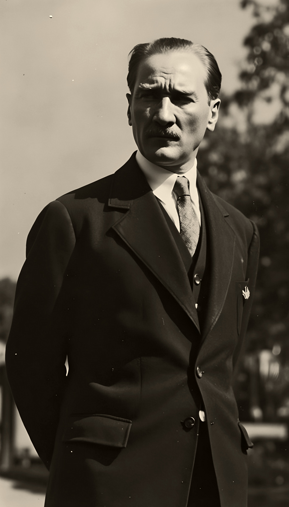
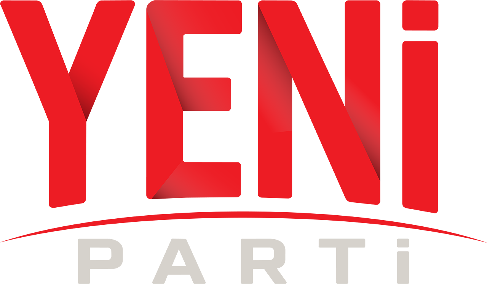

SAYGI VE ÖZLEMLE
10
Kasım
1938
09.05
“Benim naçiz vücudum elbet bir gün toprak olacaktır, ancak Türkiye Cumhuriyeti ilelebet payidar kalacaktır.”
MUSTAFA KEMAL ATATÜRK

DİDİM
Gökhan
UZMAN
YENİ PARTİ DİDİM İLÇE BAŞKANI